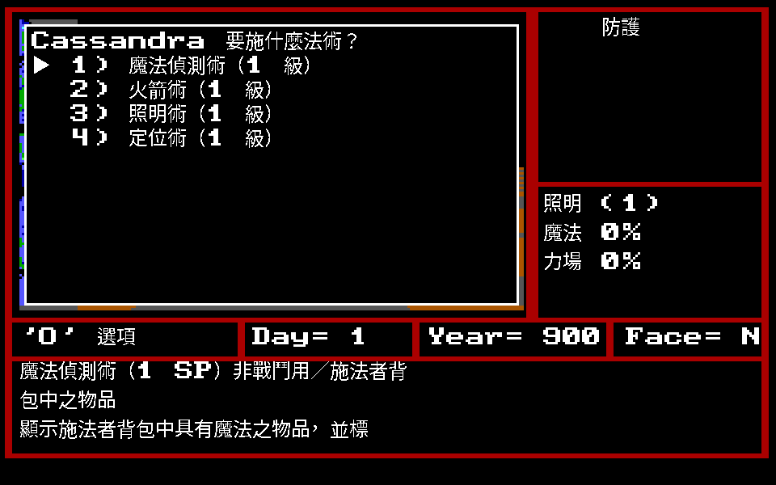

法術系統
全部 96 個法術：48 種神術（牧師）與 48 種魔法（巫師），各分 9 個等級。
一個人不可同時學習兩種。

施法選單。remake 把手冊的說明直接接在法術名稱後面
法力等級怎麼長
施法者可以施放自己法力等級以及更低等級的法術。法力等級跟著經驗等級走：
| 法力等級 |
1 |
2 |
3 |
4 |
5 |
6 |
7 |
8 |
9 |
| 經驗等級 |
1 |
3 |
5 |
7 |
9 |
11 |
13 |
15 |
17 |
升級時可能會漏學某些法術，那些要在牧師神殿或法師協會用錢買。
每個能施法的隊員都有一本法術冊，會的法術以 V 標記。
消耗怎麼看
- 消耗欄的
SP 是法力點數，通常和法術等級相同。
- 較高等級的法術除了法力點數還要寶石。
- 寫成
1/ L 的是「以施法者經驗等級計算」，手冊下冊 p.6 有說明。
施法的三個限制
- 大部分怪物對某些法術有抗力，施了不保證有效。
- 戰鬥中的法術可能在結束前被怪物破解；每回合怪物都會嘗試破解身上的法術。
- 有些怪物能施用反法術（Dispel），讓所有正在作用的法術失效。
牧師神術 Clerical Spells
第 1 級
| # | 名稱 | 消耗 | 形式 | 對象 | 說明 |
|---|
| 1 | 幻影術Apparition | 1 SP | 戰鬥用 | 10 個怪物 | 使敵人內心產生恐怖的鬼怪幻象，減低其攻擊的準確度 |
| 2 | 喚醒術Awaken | 1 SP | 任何時刻 | 所有睡眠中之隊員 | 喚醒所有睡眠中之隊員，並解除其睡眠狀態，於隊伍在休息遭受攻擊時特別有用 |
| 3 | 祝福術Bless | 1 SP | 戰鬥用 | 全體隊員 | 增加戰鬥中隊員攻擊之準確度 |
| 4 | 急救術First Aid | 1 SP | 任何時刻 | 1 名隊員 | 治療輕傷並回復 8 點之生命點數 |
| 5 | 照明術Light | 1 SP | 非戰鬥用 | 整個隊伍 | 提供隊伍一個照明單位，以照亮一黑暗地區，重覆施此法有累積效用 |
| 6 | 強效治療Power Cure | 1/ L＋1 寶石 | 任何時刻 | 1 名隊員 | 恢復隊員健康，及依施法者經驗等級回復 1—10 點之生命點數 |
| 7 | 驅魔術Turn Undead | 1 SP | 戰鬥用 | 所有的不死怪物 | 摧毀部份或所有不死怪物，視施法者之經驗等級及怪物之力量等級來決定 |
第 2 級
| # | 名稱 | 消耗 | 形式 | 對象 | 說明 |
|---|
| 1 | 治傷術Cure Wounds | 2 SP | 任何時刻 | 1 名隊員 | 治療較重之傷害，並回復其 15 點之生命點數 |
| 2 | 勇氣術Heroism | 2 SP＋1 寶石 | 戰鬥用 | 1 名隊員 | 暫時提昇受術者 6 級經驗等級，可維持到戰鬥結束 |
| 3 | 自然之門Nature's Gate | 2 SP | 非戰鬥用，室外 | 整個隊伍 | 以大自然之力量在科隆大地上的二個地點打開一空間通道。這些位置將隨時間（日／年）而改變 |
| 4 | 傷痛術Pain | 2 SP | 戰鬥用 | 一隻會死之怪物 | 說明欄在 p.11，超出本批範圍 |
| 5 | 拒絕傷害Protection from Elements | 2 SP＋1寶石 | 任何時刻 | 整個隊伍 | 增加所有隊員對害怕，冷，火，毒藥，酸和電擊之抗力，增加之幅度視施法者之等級而定，有效期間為1日。 |
| 6 | 沈默術Silence | 2 SP | 戰鬥用 | 4個怪物＋每等級加1個怪物 | 阻止怪物施用法術，直到牠破解為止。 |
| 7 | 衰弱術Weaken | 2 SP＋1寶石 | 戰鬥用 | 10個怪物 | 減弱所有受術之怪物的能力，降低牠們所能造成之傷害至一半程度，直到法術破解為止。 |
第 3 級
| # | 名稱 | 消耗 | 形式 | 對象 | 說明 |
|---|
| 1 | 冷凍光線Cold Ray | 3 SP＋2寶石 | 戰鬥用，非肉搏狀態 | 5個怪物 | 對怪物施以強冷光束，貫穿其心臟並造成25點之傷害。 |
| 2 | 製造食物Create Food | 3 SP＋2寶石 | 非戰鬥用 | 施法者 | 增加8個單位之食物給施法者。 |
| 3 | 解毒術Cure Poison | 3 SP | 任何時刻 | 1名隊員 | 將隊員所中之毒逼出體外，並解除中毒狀況。 |
| 4 | 定身術Immobilize | 3 SP | 戰鬥用 | 5個怪物 | 使怪物無法移動。 |
| 5 | 持續照明術Lasting Light | 3 SP | 非戰鬥用 | 整個隊伍 | 提供隊伍20個照明單位以排除黑暗。 |
| 6 | 水行術Walk on Water | 3 SP＋2寶石 | 非戰鬥用，室外 | 整個隊伍 | 在隊伍經過之處產生浮動沙丘，以能在水上行走，效用可維持一天。 |
第 4 級
| # | 名稱 | 消耗 | 形式 | 對象 | 說明 |
|---|
| 1 | 噴酸術Acid Spray | 4 SP＋3寶石 | 戰鬥用，非肉搏狀態 | 3個怪物 | 除非怪物能抗酸，否則以腐蝕似酸液造成6—60點之傷害。 |
| 2 | 風界傳送術Air Transmutation | 4 SP＋3寶石 | 非戰鬥用，室外 | 整個隊伍 | 立即將隊員傳送至有風元素的領域，以能在風的自然地區探險。 |
| 3 | 治病術Cure Disease | 4 SP | 任何時刻 | 1名隊員 | 恢復生病隊員之健康，解除生病狀況。 |
| 4 | 回復陣營Restore Alignment | 4 SP＋3寶石 | 非戰鬥用 | 1名隊員 | 將因故改變陣營之隊員回復到其原本的陣營。 |
| 5 | 傳送到地面Surface | 4 SP＋3寶石 | 非戰鬥用 | 整個隊伍 | 將隊伍由地下層立即傳送到地面。 |
| 6 | 神聖賜與Holy Bonus | 4 SP＋3寶石 | 戰鬥用 | 整個隊伍 | 由牧師之神聖力量，增加全體隊員之攻擊破壞力，依施法者之等級，以每2個等級加1點的傷害力。 |
第 5 級
| # | 名稱 | 消耗 | 形式 | 對象 | 說明 |
|---|
| 1 | 狂風陣Air Encasement | 5 SP＋5寶石 | 戰鬥用 | 1個怪物 | 使一名敵人為狂風所圍繞，分隔在戰場外，並造成敵人每回合10的傷害，直至陣法被破或遭受攻擊為止。 |
| 2 | 致命蟲群術Deadly Swarm | 5 SP＋5寶石 | 戰鬥用 | 10個怪物 | 召集一群殺人蜂對付怪物，使其遭受4—40點之傷害。 |
| 3 | 狂暴術Frenzy | 5 SP＋5寶石 | 戰鬥用 | 1名隊員，只能1次 | 使1名隊員進入狂暴狀態，攻擊所有畫面上之怪物。由於經驗之消耗，此隊員將失去1點之耐力並陷入昏迷狀態。 |
| 4 | 麻痺術Paralyze | 5 SP＋5寶石 | 戰鬥用 | 10個怪物 | 麻痺所有敵人，使之陷入癱瘓。 |
| 5 | 恢復術Remove Condition | 5 SP＋5寶石 | 任何時刻 | 1個隊員 | 立即恢復隊員到最好的狀況，但死亡、石化和根除無效。 |
第 6 級
| # | 名稱 | 消耗 | 形式 | 對象 | 說明 |
|---|
| 1 | 地界傳送術Earth Transmutation | 6 SP＋6寶石 | 非戰鬥用，室外 | 整個隊伍 | 將隊伍傳至有地元素的領域去以便在土的自然區域中探險。 |
| 2 | 回春術Rejuvenate | 6 SP＋6寶石 | 非戰鬥用 | 1名隊員 | 以青春之泉使隊員年輕1—10歲，並回復到較年輕時之各種狀況及能力，但施法時有招致反效果之可能。 |
| 3 | 解除石化Stone to Flesh | 6 SP＋6寶石 | 任何時刻 | 1名隊員 | 解除隊員之石化僵硬現象，使其恢復正常。 |
| 4 | 洪水陣Water Encasement | 6 SP＋6寶石 | 戰鬥 | 1個怪物 | 使敵人淹沒在水中，分隔在戰場之外，並造成每回合20點的傷害，直到陣法被破或遭受攻擊。 |
| 5 | 水界傳送術Water Toansmutation | 6 SP＋6寶石 | 非戰鬥用，室外 | 整個隊伍 | 將隊伍傳至有水的領域去，以便在水之自然區域中探險。 |
第 7 級
| # | 名稱 | 消耗 | 形式 | 對象 | 說明 |
|---|
| 1 | 后土陣Earth Encasement | 7 SP＋7寶石 | 戰鬥用 | 1個怪物 | 以土掩埋敵人，使之分隔在戰場外，並造成每回合40點之傷害，直到陣法被破或攻擊。 |
| 2 | 火焰枷鎖Fiery Flail | 7 SP＋7寶石 | 戰鬥用 | 1個怪物 | 產生一巨大之火枷攻擊怪物，造成其100—400點之傷害。 |
| 3 | 月光術Moon Ray | 7 SP＋7寶石 | 戰鬥用，室外 | 10個怪物 | 將所有參與戰鬥之成員籠罩在柔和光束下，增加自己隊員10—100點生命點數，並減去每個怪物10—100點之生命點數。 |
| 4 | 復活術Raise Dead | 7 SP＋7寶石 | 任何時刻 | 1名隊員 | 使死去的隊員復活，但失敗的機率很大，甚至會使該隊員被根除，而且施法者會蒼老一歲。 |
第 8 級
| # | 名稱 | 消耗 | 形式 | 對象 | 說明 |
|---|
| 1 | 烈火陣Fire Encasement | 8 SP＋8寶石 | 戰鬥用 | 1個怪物 | 利用火焰將敵人困住，並造成每回合80點之傷害，直到陣法被破或受攻擊為止。 |
| 2 | 火界傳送術Fire Transmutation | 8 SP＋8寶石 | 非戰鬥用，室外 | 整個隊伍 | 將隊伍傳送至有火元素的區域，以便在火之自然地區探險。 |
| 3 | 扭曲重力術Mass Distortion | 8 SP＋8寶石 | 戰鬥用 | 2個怪物 | 扭曲敵人附近的重力圈，使他們的重量加倍，損失一半的生命力。 |
| 4 | 城市傳送術Town Portal | 8 SP＋8寶石 | 非戰鬥用 | 整個隊伍 | 可將隊伍傳至任何城市。 |
第 9 級
| # | 名稱 | 消耗 | 形式 | 對象 | 說明 |
|---|
| 1 | 神之干涉Divine Intervention | 10 SP＋20寶石 | 非戰鬥用 | 整個隊伍 | 利用神的力量，使全部隊員之生命點數恢復，解除所有不佳狀況（根除例外）。注意：施法者將因此蒼老5歲。 |
| 2 | 神聖之咒Holy Word | 10 SP＋20寶石 | 戰鬥 | 全部 | 說出一句有毀滅力量之咒語，將所有不死怪物全部摧毀。注意：施法者將蒼老1歲。 |
| 3 | 復活Resurrection | 10 SP＋10寶石 | 非戰鬥用 | 1名隊員 | 將被根除之隊員救回來，但增長5歲並降低1點耐力。此法術有失敗之可能，施法者也將增長1歲。 |
| 4 | 去咒術Uncurse Item | 10 SP＋50寶石 | 非戰鬥用 | 施法者本身 | 去掉背袋內物品所附的詛咒。（筆者註：此法術並沒有用處，因為用恢復術即可去除詛咒。） |
巫師魔法 Sorcerer Spells
第 1 級
| # | 名稱 | 消耗 | 形式 | 對象 | 說明 |
|---|
| 1 | 喚醒術Awaken | 1 SP | 任何時刻 | 所有睡眠中之隊員 | 喚醒隊伍中之睡眠隊員，立即解除睡眠狀態，在休息時遭攻擊之際最為有用。 |
| 2 | 魔法偵測術Detect Magic | 1 SP | 非戰鬥用 | 施法者背包中之物品 | 顯示施法者背包中具有魔法之物品，並標示使用次數。也可用以偵測週遭環境及箱子中是否有魔法存在。 |
| 3 | 能量爆破術Energy Blast | 1 SP／L＋1寶石 | 戰鬥用 | 1個怪物 | 以一股純能源快速攻擊怪物，其傷害力視施法者之等級而定，每一級造成1—6點之傷害。 |
| 4 | 火箭術Flame Arrow | 1 SP | 戰鬥用 | 1個怪物 | 對怪物發射一火箭，除非怪物能抗火，否則可造成2—8點之火傷。 |
| 5 | 照明術Light | 1 SP | 非戰鬥用 | 整個隊伍 | 同牧師法術1—5。 |
| 6 | 定位術Location | 1 SP | 非戰鬥用 | 整個隊伍 | 給予隊伍所在之精確位置，並顯示目前16×16區域之地圖，標示你所在位置及方向，在隊伍迷失或經過空間走道傳送後定位使用。 |
| 7 | 催眠術Sleep | 1 SP | 戰鬥用 | 4個怪物＋1個怪物／L | 使怪物沈睡無法發動攻擊，直到怪物受傷或克服法術為止。 |
第 2 級
| # | 名稱 | 消耗 | 形式 | 對象 | 說明 |
|---|
| 1 | 鷹眼術Eagle Eye | Z／L（原書如此） | 非戰鬥用，室外 | 施法者等級×5步／等級 | 顯示戶外5×5之區域地圖於螢幕上，並標明隊伍位置。 |
| 2 | 閃電箭Electric Arrow | 2 SP | 戰鬥用 | 1個怪物 | 電擊怪物，可造成4—16點之傷害。 |
| 3 | 識別術Identify Monster | 2 SP＋1 寶石 | 戰鬥用 | 1個怪物 | 在戰鬥中使施法者知道一個怪物之狀況。 |
| 4 | 跳躍術Jump | 2 SP | 非戰鬥用 | 整個隊伍 | 在沒有魔法障礙下讓隊伍向前移動二個方格。 |
| 5 | 飄浮術Levitate | 2 SP | 非戰鬥用 | 整個隊伍 | 使所有隊員在地上飄浮，可避免許多危險，效用可維持一天。 |
| 6 | 魯易浮標Leogd's Beacon | 2 SP＋1 寶石 | 非戰鬥用，地下城中 | 整個隊伍 | 在目前位置留下指標，以便在下次施用此法術時能立即回到此地。 |
| 7 | 魔法防護術Protection from Magic | 1 SP／L＋1寶石 | 任何時刻 | 整個隊伍 | 增加全體隊員對魔法之抗力，幅度視施法者之功力而定，可持續一天有效。 |
第 3 級
| # | 名稱 | 消耗 | 形式 | 對象 | 說明 |
|---|
| 1 | 酸液Acid Stream | 1 SP／L＋2寶石 | 戰鬥用 | 1個怪物 | 除非怪物抗酸，否則以熱灼之酸液可造成2—8點之傷害。 |
| 2 | 飛行術Fly | 3 SP | 非戰鬥用，室外 | 整個隊伍 | 將全體隊員以飛行方式移動到另一個戶外地區，並降落在最安全之地點。 |
| 3 | 隱身術Invisibility | 3 SP | 戰鬥用 | 整個隊伍 | 以隱形罩蓋所有隊員，大大地降低被怪物擊中之機率。 |
| 4 | 電擊術Lighting Bolt | 1 SP／L＋2寶石 | 戰鬥 | 4個怪物 | 以巨大之閃電攻擊怪物，並依施法者之等級造成每級1—6點之傷害。 |
| 5 | 魔網Web | 3 SP／L＋2寶石 | 戰鬥用 | 4個怪物＋1個怪物／施法者等級 | 以超自然之魔網將怪物網住，使牠們無法在戰鬥中有所作用，直到逃脫為止。 |
| 6 | 巫師眼Wizard Eye | 3 SP／L＋2寶石 | 非戰鬥用，室內 | 整個隊伍 | 同鷹眼，但在室內使用。 |
第 4 級
| # | 名稱 | 消耗 | 形式 | 對象 | 說明 |
|---|
| 1 | 冷凍射線Cold Beam | 1 SP／L＋3寶石 | 戰鬥用 | 1個怪物 | 除非怪物抗冷，否則以強大之冷流貫穿怪物之心，並依施法者等級造成每級6點之傷害。 |
| 2 | 衰弱心智術Feeble Mind | 4 SP／L＋3寶石 | 戰鬥用 | 5個怪物 | 使怪物腦中一片空白，喪失所有能力，直到戰鬥結束或逃脫為止。 |
| 3 | 火球術Fire Ball | 1 SP／L＋3寶石 | 戰鬥用，非肉搏狀態 | 6個怪物 | 投擲一致命火球到怪物群中，依施法者等級造成每級1—6點之傷害。 |
| 4 | 守衛術Guard Dog | 4 SP | 非戰鬥用 | 整個隊伍 | 對隊伍提供一超自然警衛，防止1天內遭受突襲。 |
| 5 | 防護罩Shield | 4 SP | 戰鬥用 | 整個隊伍 | 在隊伍四週建立一無形防護罩，保護隊伍不受投射武器之攻擊。 |
| 6 | 時間扭曲Time Distortion | 4 SP／L＋3寶石 | 戰鬥用 | 整個隊伍 | 將時間扭曲，使隊伍有足夠時間自大部分戰鬥中安全撤退。 |
第 5 級
| # | 名稱 | 消耗 | 形式 | 對象 | 說明 |
|---|
| 1 | 分裂術Disrupt | 5 SP／L＋5寶石 | 戰鬥用，非肉搏狀態 | 1個怪物 | 將怪物之分子結構破壞，造成100點之傷害。 |
| 2 | 死亡之指Finger of Death | 5 SP／L＋5寶石 | 戰鬥用 | 3個怪物 | 將所有已死之古代巫師的法力集中到施法者身上，使他所指向之怪物立即死亡。 |
| 3 | 砂暴術Sand Storm | 2 SP／L＋5寶石 | 戰鬥用，室外 | 10個怪物 | 以自然界之力量造成一狂風暴，並依施法者等級造成每級1—8點之傷害。 |
| 4 | 庇護術Shelter | 5 SP | 非戰鬥用 | 整個隊伍 | 提供隊伍能安全地休息1天，不受攻擊之危險威脅。 |
| 5 | 傳送術Teleport | 5 SP | 非戰鬥用 | 整個隊伍 | 立即將隊伍由原地向任一方向移動1—9格。 |
第 6 級
| # | 名稱 | 消耗 | 形式 | 對象 | 說明 |
|---|
| 1 | 粉碎術Disintegration | 6 SP／L＋6寶石 | 戰鬥用 | 3個怪物 | 粉碎怪物全體或一部份身體，造成50點傷害。 |
| 2 | 陷敵術Entrapment | 6 SP／L＋6寶石 | 戰鬥用 | 全部 | 以魔法產生一力場防止所有人物脫逃。 |
| 3 | 冷凍術Fantastic Freeze | 2 SP／L＋6寶石 | 戰鬥用，非肉搏狀態 | 3個怪物 | 以超寒流射向怪物，將之冰凍並依施法者等級造成每級10點之傷害。 |
| 4 | 能量補充術Recharge Item | 6 SP／L＋6寶石 | 非戰鬥用 | 施法者本身 | 將施法者背包中僅餘1次可用之物品回復1—6次之可用次數。有時法術可能失敗造成物品損毀。 |
| 5 | 超級電擊Super Shock | 2 SP／L＋6寶石 | 戰鬥用 | 1個怪物 | 以強大電流電擊怪物，並依施法者之等級造成每級20點之傷害。 |
第 7 級
| # | 名稱 | 消耗 | 形式 | 對象 | 說明 |
|---|
| 1 | 飛劍術Dancing Sword | 3 SP／L＋7寶石 | 戰鬥用 | 10個怪物 | 以閃電般速度發出飛劍，並依施法者之等級造成每級1—12點之傷害。 |
| 2 | 複製術Duplication | 7 SP＋100寶石 | 非戰鬥用 | 施法者本身 | 使施法者精確地複製背包中之任何一項物品，當然背包中必須有容納的空間才可，此法術失敗摧毀物品之可能性不大。 |
| 3 | 穿透術Etherealize | 7 SP＋7寶石 | 非戰鬥用 | 整個隊伍 | 暫時改變全部隊員之分子結構，使能穿過任何障礙（力場，牆，山脈）而前進一格。 |
| 4 | 奇異之光術Prismatic Light | 7 SP＋7寶石 | 戰鬥用 | 10個怪物 | 一個威力十足但卻不穩定之法術，對所有怪物將產生不可預期之效果。 |
第 8 級
| # | 名稱 | 消耗 | 形式 | 對象 | 說明 |
|---|
| 1 | 焚化術Incinerate | 3 SP／L＋8寶石 | 戰鬥用 | 1個怪物 | 將怪物置於千萬火球焚燒之中，依施法者等級造成每級20—40點之傷害。 |
| 2 | 高壓電擊術Mega Volts | 3 SP／L＋8寶石 | 戰鬥用 | 10個怪物 | 以致命的一連串閃電攻擊怪物，並依施法者等級造成4—16點之傷害。 |
| 3 | 隕石雨Meteor Shower | 8 SP＋1／怪物＋寶石 | 戰鬥用，室外 | 全部（受法力點數限制） | 以冰雹般落下之隕石埋葬怪物，對每個怪物造成5—50點之傷害。 |
| 4 | 強力護罩Power Shield | 8 SP＋8寶石 | 戰鬥用 | 整個隊伍 | 使戰鬥中之隊員所受攻擊傷害力減半。 |
第 9 級
| # | 名稱 | 消耗 | 形式 | 對象 | 說明 |
|---|
| 1 | 魔法黑洞Implosion | 10 SP＋10寶石 | 戰鬥用 | 1個怪物 | 在怪物中產生一巨大黑洞，將牠吸入消失無形。 |
| 2 | 地獄之火Inferno | 3 SP／L＋10寶石 | 戰鬥用 | 10個怪物 | 以太陽之巨大熱量使怪物依施法者等級造成每級1—20點之傷害。 |
| 3 | 星爆術Star Burst | 10 SP＋1／怪物＋20寶石 | 戰鬥用 | 全部（受法力點數限制） | 以星爆之碎片攻擊所有怪物，造成20—200點之傷害。 |
| 4 | 加強法力Enchant Item | 50 SP／物品＋50寶石 | 非戰鬥用 | 施法者本身 | 提高物品魔法等級。 |
上面兩份表的資料來自 data/spells.json —— 那是手冊逐條轉錄之後由
cmd/mm2data 從玩家自備的原版產生的，和遊戲裡按 C 看到的說明是同一份。
另外抄一份到這裡只會多一個會漂移的副本。
幾條《軟體世界》補的用法：
- 巫師 3-2（飛行術 Fly） 是這一代唯一的長距離移動手段，另一個是 Witch Broom。
沒有魔毯。
- 巫師 7-3（穿牆術） 用來進 3 號城 (15,10) 拿那個加 13 點防護等級的戒指。
- 牧師 9 級神聖之咒（Holy Word） 是牧師考驗的硬條件：C1-10,15 的科諾克之魂
必須用它消滅那裡的怪物，換其他方法都不算。它刻在 C1-5,5 的大樹上。
- 牧師 9-1 神之干涉（Divine Intervention） 要去德魯伊地穴，殺掉 Horvath
之後老德魯伊才會教。